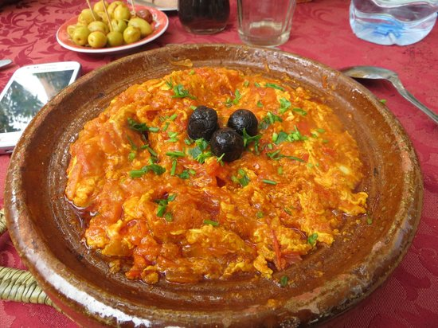

Fruit de mer
La Pastilla au poisson et aux fruits de mer est tout aussi commune que la version classique au Maroc
CommenterChermoula
La charmoula, également orthographiée chermoula, est une sauce marocaine très parfumée utilisée comme marinade pour le poisson
Commenter
Céréales et Légume
Les céréales et les légumes jouent un rôle essentiel dans la cuisine de cette région.
CommenterHuil d'olive
L'huile d'olive marocaine est réputée pour sa qualité exceptionnelle et ses caractéristiques distinctives.
CommenterCouscous du rif
Le couscous du Rif peut être préparé avec différentes variétés de légumes de saison, souvent cultivés localement.
CommenterBissara
La Bissara est une soupe marocaine traditionnelle, généralement à base de pois cassés.
CommenterCouscous du sahara
En raison des conditions climatiques arides du Sahara, le couscous du Sahara peut être adapté aux ingrédients disponibles dans la région.
CommenterViande Séchée
La viande est coupée en fines tranches ou en lanières pour faciliter le processus de séchage.
CommenterRfissa
La Rfissa est un plat traditionnel marocain, réputé pour sa saveur riche et son importance culturelle
CommenterHuile d'Argan
L'huile d'argan est extraite des noix d'argan. Traditionnellement, les noix sont récoltées, séchées et décortiquées à la main par les femmes berbères.
Commenter

Omelette Berbère
L'omelette berbère, également connue sous le nom d'"Amazigh omelette" en référence au peuple berbère, est une délicieuse préparation qui reflète la cuisine traditionnelle du Maroc.
Commenter